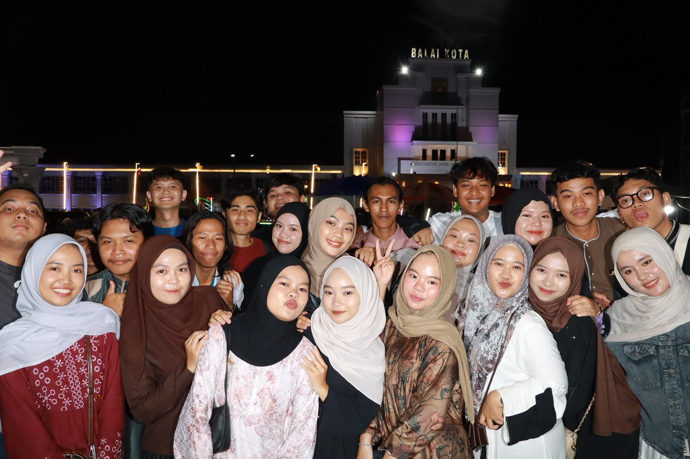

Gallery



Spesialis Manajemen Sumber Daya Perairan, Analisis Ekonomi Perikanan, dan Kebijakan Berkelanjutan di Kalimantan Selatan.
Lihat Profil[Nama Lengkap Anda]
S1 Perikanan, Universitas Lambung Mangkurat
Magister Manajemen Sumber Daya Kelautan
Peneliti Senior - Analisis Ekonomi & Kebijakan Perikanan
Instansi Penelitian Kelautan Banjarmasin
Banjarmasin, Kalimantan Selatan
Indonesia
SWOT Analisis Perikanan, Review Literatur Sistematis, RBA Cost-Benefit
email@[domain].ac.id
+62 [Nomor HP]
